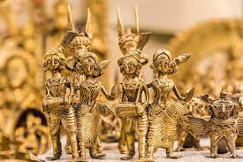

WEST BENGAL

Brass craft has made a significant change within the artwork created by the artisans in India. Many handicrafts have been made on and with brass such as bowls, lamps, containers, ashtrays, etc. West Bengal in particular has been using the ancient metal casting technique of Dhokra to facilitate the use of brass. A non-ferrous metal casting using the lost-wax casting technique, Dhokra has been used for over 4,000 years in India. Winning hearts in both domestic and foreign markets, Dhokra artisans create a string of folk motifs like horses, elephants, peacocks, owls, etc. on an everyday basis. One of the oldest Dhokra artifacts is the dancing girl of Mohenjo-Daro.